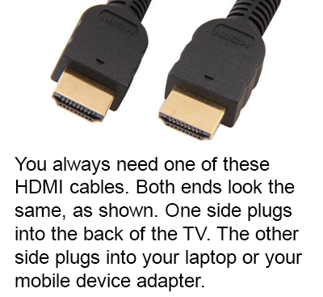
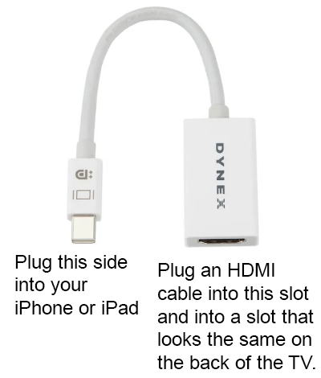
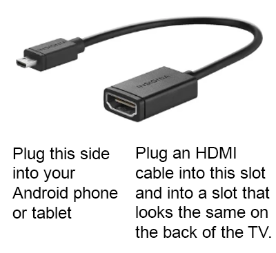
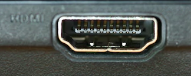

Looking to add some magic to your lesson?
Follow the steps below or summon the wizard's
willing apprentice at.
Joe Tippetts
801-502-6375
iOS (Apple) Phone or Tablet
You need an HDMI cable, like this:

And an adapter like this:

If you have an older phone, our adapter may not be compatible. Just grab someone else with a newer phone to help you.
Android Phone or Tablet
You need an HDMI cable, like this:
And an adapter like this:

If you have an older phone, our adapter may not be compatible. Just grab someone else with a newer phone to help you.
Laptop (PC or Mac)
You only need an HDMI cable, like this:
If you don't see an HDMI slot like this on your computer, then you'll need a different device.
